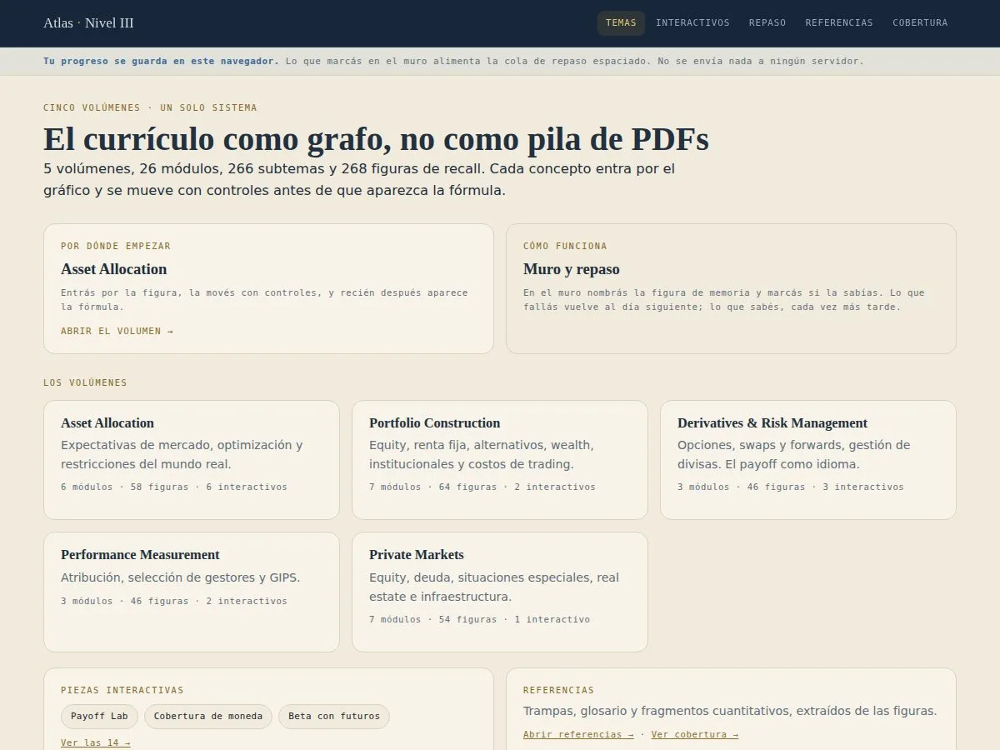
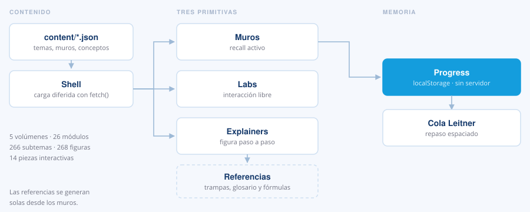
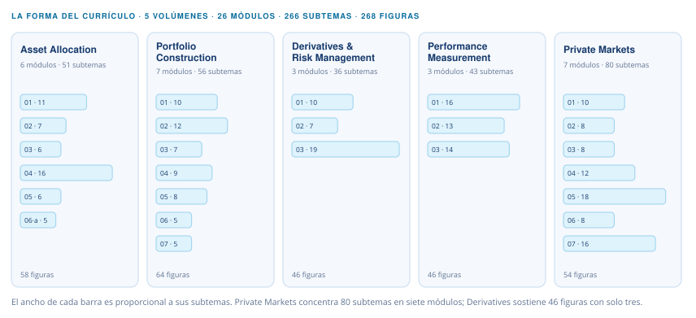
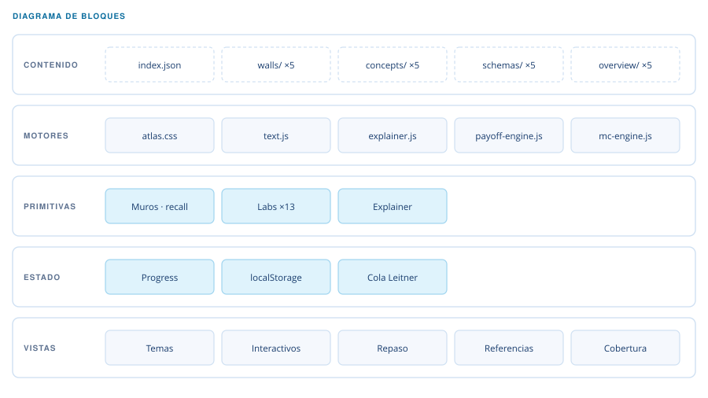

Atlas · Nivel III
Sitio de estudio para el Nivel III del programa CFA.

Qué es
Cinco volúmenes, 26 módulos, 266 subtemas y 268 figuras de recall. Cada concepto entra por el gráfico, se mueve con controles y recién después aparece la fórmula.
El concepto. El currículo como grafo, no como pila de PDFs. Tres primitivas de aprendizaje: muros para recall activo, labs para mover los parámetros a mano y explainers que se explican solos paso a paso. Lo que fallas vuelve al día siguiente y lo que sabes vuelve cada vez más tarde: una cola de repaso espaciado tipo Leitner que vive en el navegador, sin enviar nada a ningún servidor.
- HTML y SVG
- JavaScript sin framework
- JSON
- localStorage
Cómo funciona
El contenido vive en JSON y el shell lo pide cuando la ruta lo necesita. Las tres primitivas leen de ahí, y todo lo que marcas alimenta un único módulo de estado que decide cuándo te vuelve a preguntar.

La forma del currículo
La frase «el currículo como grafo» describe una intención, pero lo que el contenido documenta hoy es su reparto: dónde está la carga y dónde no. Cinco volúmenes muy desiguales entre sí, y esa desigualdad es informativa.

Ese contraste decide el método. Un volumen ancho y poco profundo se cubre leyendo; uno estrecho con la misma densidad de figuras —derivados— solo se sostiene practicando. Por eso los dos laboratorios salieron de ahí y no de otro lado.
Lo que el contenido todavía no codifica son los prerrequisitos entre módulos. Dibujar hoy un grafo de dependencias significaría inventarlas; queda pendiente declararlas en el propio contenido para que la figura salga del dato.
Cómo está compuesto
Cuatro costuras: uno guarda, uno pinta, uno escribe y los motores calculan.

Cuatro costuras
Progress guarda, atlas.css pinta, text.js escribe y los motores calculan. Ninguna vista hace dos cosas.
Carga diferida
El shell arranca con index.json y pide lo demás cuando la ruta lo necesita.
Referencias automáticas
Trampas, glosario y fórmulas se generan solos desde los muros.
Sin servidor
El progreso nunca sale del navegador.